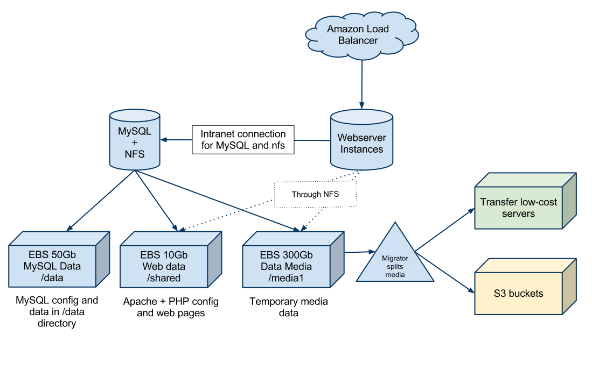
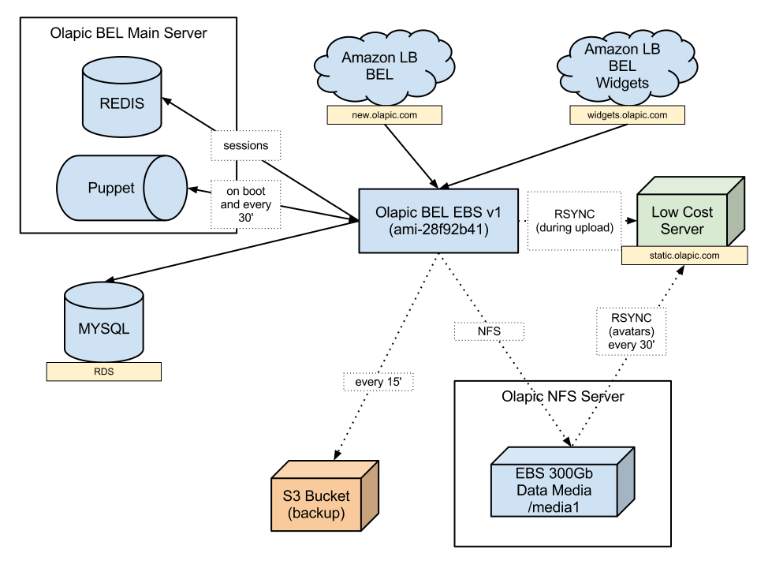
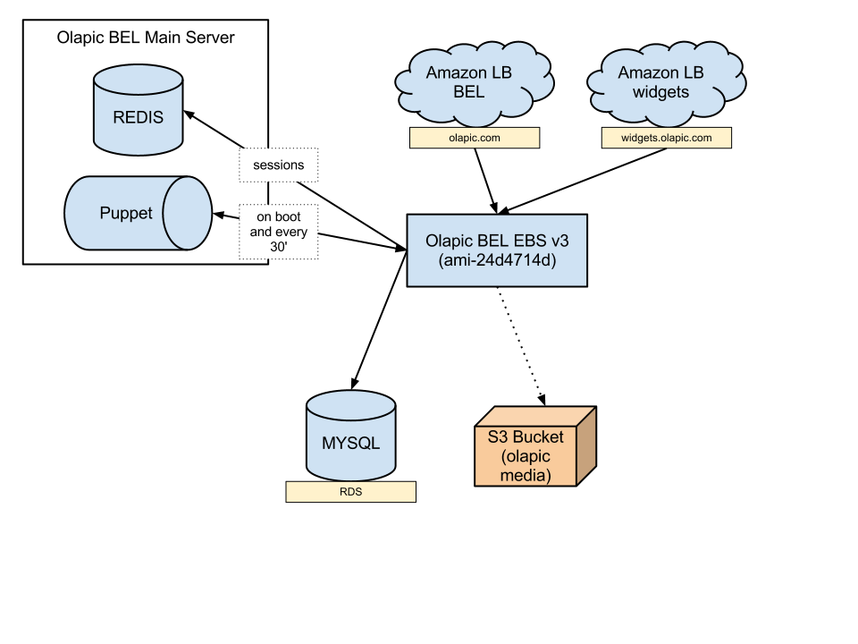
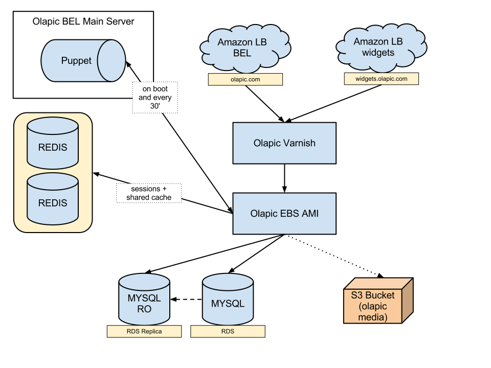

Your browser doesn't support the features required by impress.js, so you are presented with a simplified version of this presentation.
For the best experience please use the latest Chrome, Safari or Firefox browser.
AWS
Amazon Web Services
Que es y como lo usamos en Olapic
#wulia
Sebastian Alvarez
sebas@olapic.com
Porque esta bueno?
- Ahorro infinito tiempo
- Graficos chetos para diagnóstico
- Matar un servidor y levantar otro es pseudo-gratis
- Buena documentación
- Route 53
Porque puede no estar bueno?
- No es magia, hay que saber
- Hay un trillón de formas de hacer lo mismo
- Mucho todavía se hace con command lines no demasiado friendly
Fuaa, vieron como se movió?
Un AMI de Olapic
- Varnish
- PHP (si, PHP, no leiste mal)
- Imagemagick
Lo que teníamos

Porque no anduvo
- NFS es una bosta con mas de 3 instancias sobre él
- Las sesiones compartidas en archivos explotan (mas sobre nfs)
- Con esta arquitectura nos mataba el IO de disco
- Una carga en la base de datos nos dejaba mirando al techo y tardamos mucho en cambiar de instancia
Lo que teníamos despues

Porque no anduvo
- NFS sigue siendo una bosta con mas de 3 instancias sobre él (pero no lo podíamos sacar)
- widgets.olapic.com se caía mas de lo que queriamos
- Mantener NFS y RSYNC sobre SSH es una de las negradas mas grandes que vi (y eso que escribo PHP)
Lo que tenemos ahora

Un AMI de Olapic 2
- Varnish
- Memcached
- PHP (si, sigue siendo php, pero mucho mas bonito)
- Imagemagick
Porque nos gusta mas
- Menos flechitas significa menos lugares para que algo se rompa
- Al fin volamos NFS
- widgets.olapic.com no exite mas, ahora tenemos todo sobre S3 (4 dias copiando 500G de fotos)
- Amamos puppet, no podemos vivir sin el
Porque nos gusta mas mas
- Memcached para cachear respuestas de la DB redujo la carga en un 80% (no miento)
Lo que nos gustaría tener

Preguntas?
Si quieren hacemos un show and tell de la consola